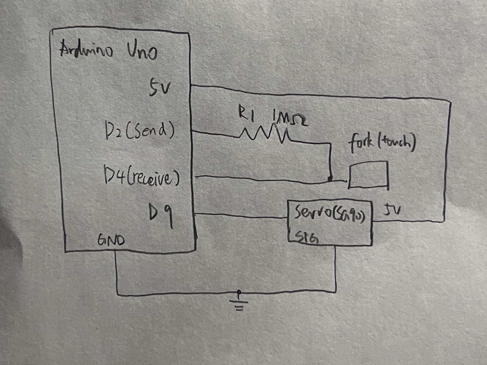
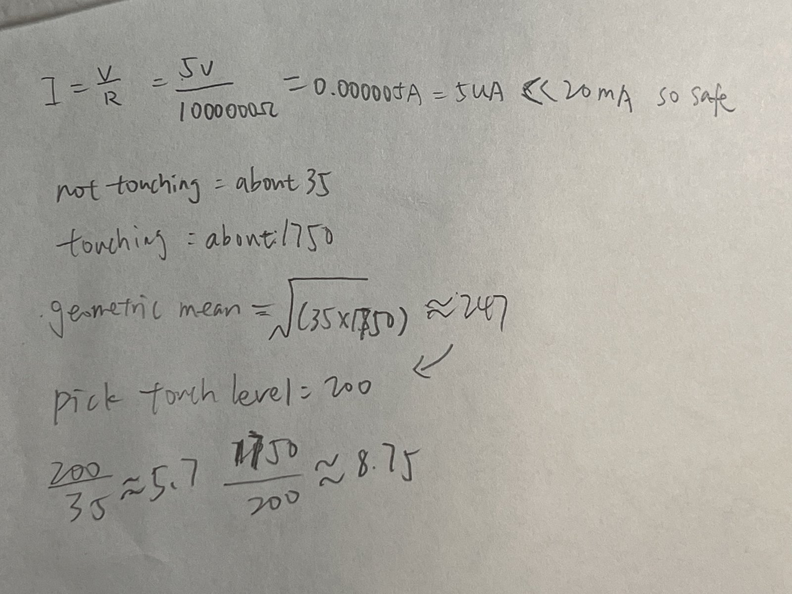
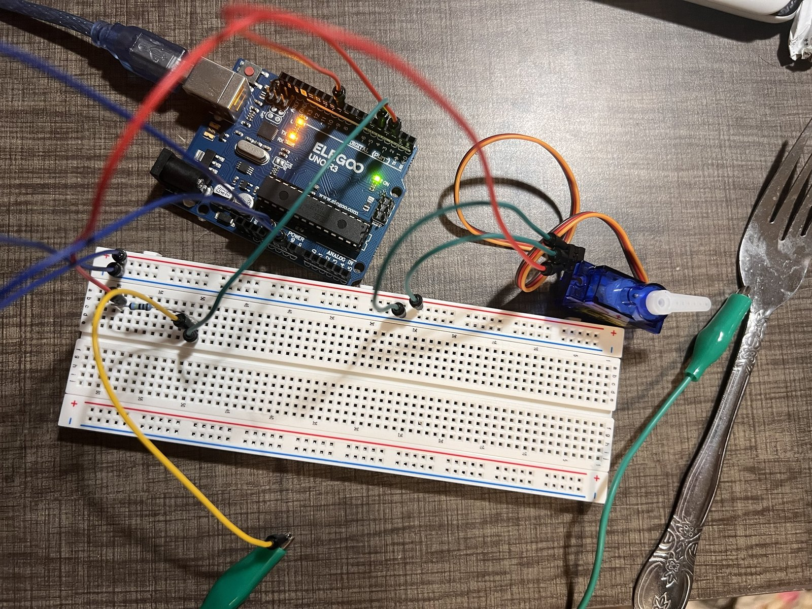
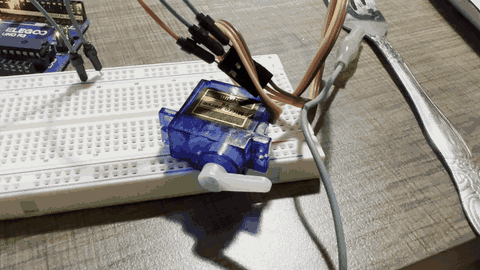
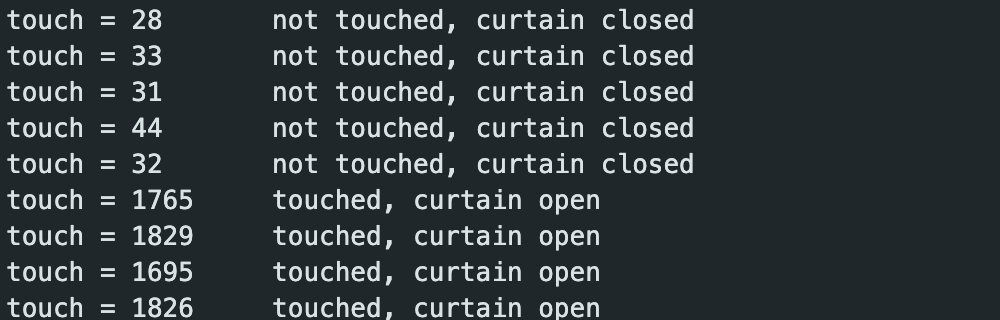
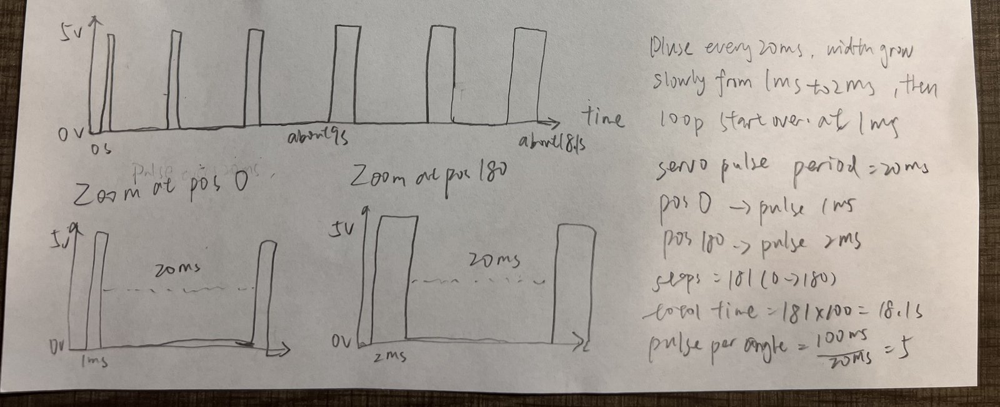

For this smart home prototype, a fork works as a touch button. When I touch the fork, a servo turns to 180 degrees to open a curtain. When I let go, it turns back to 0 degrees and the curtain closes. It uses two libraries: CapacitiveSensor for the touch input and Servo for the output.



Based on the CapacitiveSensor and Servo examples from lecture 8.
// touch library
#include <CapacitiveSensor.h>
// servo library
#include <Servo.h>
// touch sensor on pins 2 and 4
CapacitiveSensor touch = CapacitiveSensor(2, 4);
// the servo
Servo myServo;
// touch threshold
long touchLevel = 200;
// runs once
void setup() {
// no autocalibrate
touch.set_CS_AutocaL_Millis(0xFFFFFFFF);
// start serial
Serial.begin(9600);
// servo on pin 9
myServo.attach(9);
}
// runs over and over
void loop() {
// read the touch value
long val = touch.capacitiveSensor(30);
// print label
Serial.print("touch = ");
// print value
Serial.print(val);
// fork is touched
if (val > touchLevel) {
// open curtain
myServo.write(180);
// print status
Serial.println("\t touched, curtain open");
} else {
// close curtain
myServo.write(0);
// print status
Serial.println("\t not touched, curtain closed");
}
// wait 50 ms
delay(50);
}


read val
// the reading jumps way too far from the last good one
if (val is way bigger or smaller than lastGood) {
// ignore it
val = lastGood
}
// save it for next time
lastGood = valA broken reading shows up as one sudden jump. If a reading jumps too far from the last good one, I ignore it and keep the last good value.
read val
// keep the last 10 readings
add val to a list of the last 10 readings
// average them
smooth = average of the list
// use the smooth value instead of val
use smoothThe noise goes up and down at random, so averaging the last 10 readings cancels most of it out.
Yes, I used Claude. When my code would not compile, it told me I needed to install the CapacitiveSensor library. When the touch did nothing, I sent it a photo of my breadboard and it helped me find that the wire to the fork was not clipped on. It also helped me with the code and with building this web page, since I forgot some of my frontend skills.
Reflection: it was most helpful for debugging, because it gave me a starting point.